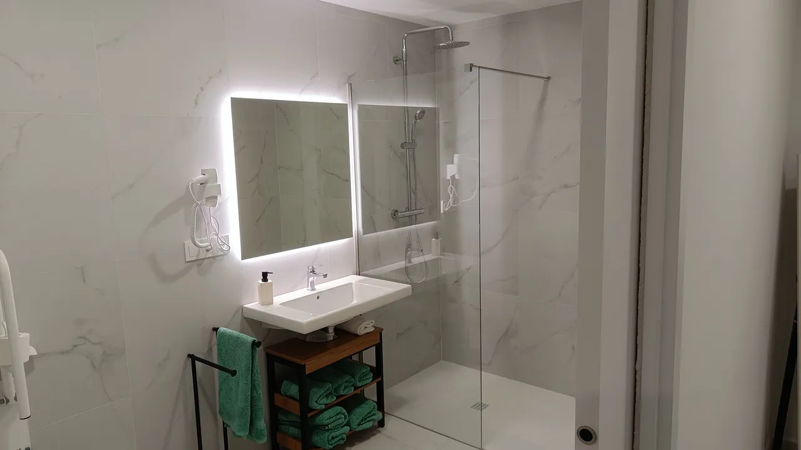
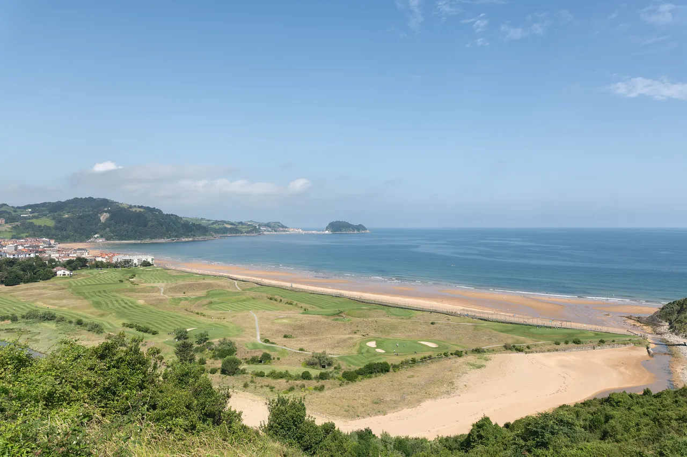
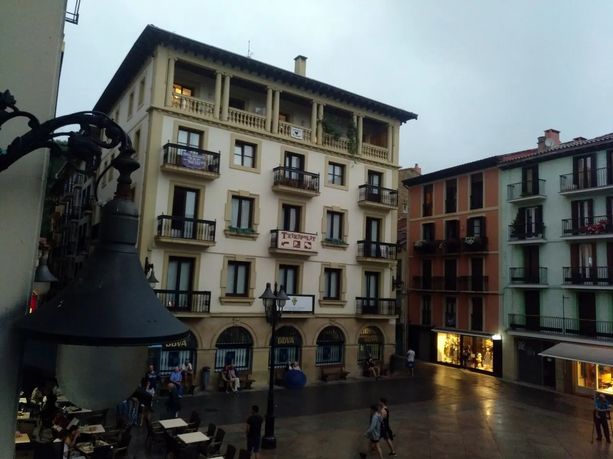

Logoxo 1
Loft accesible en el casco antiguo
- 49 m²
- 4 huéspedes
- Cama doble y sofá cama
- Planta baja
49 m² a ras de calle, con anchos de paso y baño adaptados: se puede circular en silla de ruedas por todo el apartamento.

Zarautz · Casco antiguo
Planta baja, puerta propia a la calle, sin escaleras.
Logoxo
Logoxo son dos apartamentos de planta baja en el casco antiguo de Zarautz. Cada uno tiene su puerta a la calle, sin portal y sin escalones. Por dentro son espacios abiertos: la zona de dormir forma parte del salón, y el baño es independiente. La playa está a cinco minutos andando.
Los apartamentos
Mismo estilo y mismo equipamiento, puerta con puerta. Logoxo 1 está además adaptado para silla de ruedas, y reservando los dos podéis venir hasta ocho.

Loft accesible en el casco antiguo
49 m² a ras de calle, con anchos de paso y baño adaptados: se puede circular en silla de ruedas por todo el apartamento.


Loft en el casco antiguo
47 m² sin tabiques ni pasillos, con su propia puerta a la calle. Llegas, abres y ya estás en casa.
Equipamiento
Ya vengas a surfear, a teletrabajar o a comer bien, lo tienes todo listo.
Y de la zona de pintxos, andando desde la puerta.
Logoxo 1 se entra a ras de calle, con anchos de paso y baño conformes a la normativa de accesibilidad.
Alta velocidad, de sobra para teletrabajar.
Para desayunar con calma y ahorrarte alguna cena fuera.
Potente y lista para el invierno de la costa vasca.
Ropa de cama y toallas incluidas, listas a tu llegada.
Zarautz
Dos kilómetros y medio de arena, olas para surfear todo el año, el malecón para pasear y un casco viejo lleno de bares de pintxos. Todo se hace andando desde la puerta.




Fotos de Zarautz: Giorgio Galeotti (CC BY-SA 4.0), diego_cue (CC BY-SA 3.0), joquerollo (CC BY 2.0), ElviraOliver (CC BY-SA 3.0 es), Theklan (CC BY-SA 4.0), Wikimedia Commons.

Ubicación
Herrikobarra es una calle peatonal y tranquila, en pleno casco viejo pero apartada del trasiego de la calle Mayor y de Zigordia. Tienes el ambiente a la vuelta de la esquina y el silencio en casa.
Sin intermediarios
Lo mismo que encuentras en las plataformas, sin lo que cuestan.
Sin la comisión de las plataformas. Lo que te ahorras se queda en tu bolsillo.
Nos escribes a nosotros y te contestamos nosotros. Sin centralitas ni formularios perdidos.
Prioridad en la hora de entrada y de salida, según disponibilidad.
Condiciones
Las mismas condiciones para los dos apartamentos.
Contacto
Consulta la disponibilidad de los dos apartamentos y reserva sin comisiones. Y si tienes alguna duda, escríbenos: contestamos nosotros.